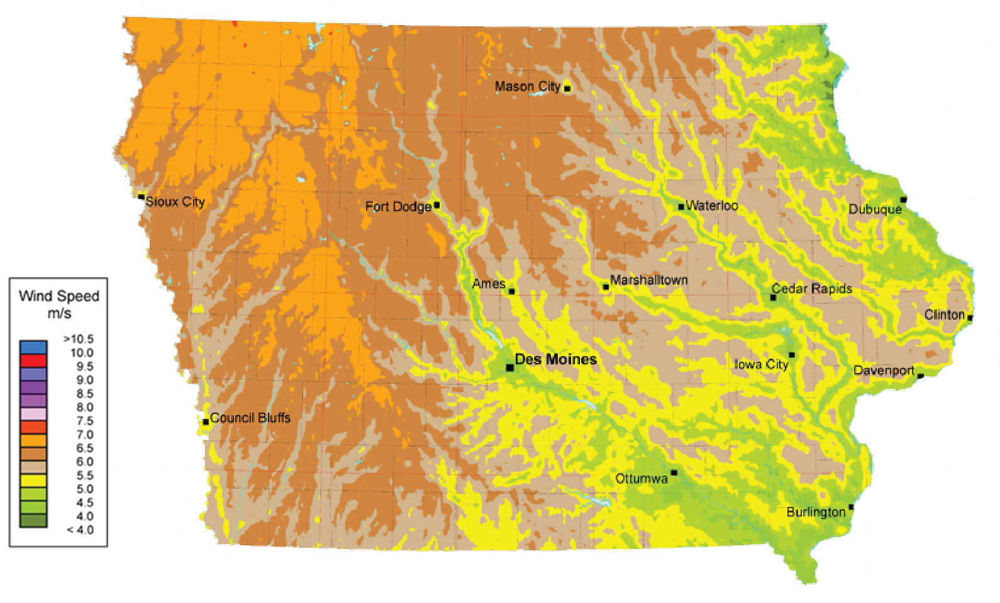

Topography
To understand the impact of wind on the Iowa, start at the origin of the land's topography. Iowa's landscape was formed over one million years ago. The glaciers left behind a smooth landscape. A moraine of abundant grasslands and shallow wetlands.
The Baxoje Tribe, the original inhabitants, named the terrain: IOWAY--'the beautiful land'.
Glaciers created the black, rich dirt--an ideal combination of silt, clay, and sand. The most fertile soil in the world. The topography of Iowa consists of a gently rolling plain that slopes from the highest point of 1,670 ft (509 m) in the northwest to the lowest point of 480 ft (146 m) in the southeast at the mouth of the Des Moines River. (city-data.com)
Loess Hills
In westernmost Iowa, the Loess Hills rise 200 feet above the flat plains forming a narrow band running north-south 200 miles along the Missouri River. The steep angles and sharp bluffs on the western side of the Loess Hills are in sharp contrast to the flat rectangular cropfields of the Missouri River flood plain. The extreme thickness of the loess layers and the intricately carved terrain of the Loess Hills make them a rare geologic feature. Today we know that loess was eolian (deposited by the wind). During the Ice Age, glaciers ground underlying rock into a fine powderlike sediment called "glacial flour." As temperatures warmed, sediment eventually deposited on flood plains downstream, eventually creating the Loess Hills.
Velocity
Wind is the flow of gases on a large scale. On the surface of the Earth, wind consists of the bulk movement of air. Winds are commonly classified by their spatial scale, their speed, the types of forces that cause them, the regions in which they occur, and their effect. Winds have various aspects, an important one being its velocity (wind speed); another the density of the gas involved; another its energy content or wind energy.
Wind Velocity in High Altitudes

Like many surrounding midwestern states, Iowa has particularly higher speeds of wind because of its topography. There is little friction to slow wind speeds, especially at the higher levels. As noted in the map below, average wind speeds in Northwest Iowa can reach up to six meters per second. These high altitude wind speeds make the state an excellent choice for wind farms across the northwestern part of the state which has seen a dramatic increase in wind energy production.
Making up more than 35% of the state's generated electricity, Iowa is a leading U.S. state in wind power generation. The development of wind power in Iowa began with a state law, enacted in 1983, requiring investor owned utilities purchase 105 MW of power from wind generation. In 2016, over 20 billion kWh of electrical energy was generated by wind power. As of February 2016, Iowa had over 6,300 megawatts (MW) of capacity. By 2020 the percentage of wind generated electricity in Iowa could reach 40 percent.
Estimated Average Wind Velocity
Tornadoes
Tornadoes are vertical funnels of rapidly spinning air. Their winds may top 250 miles (400 kilometers) an hour and can clear a pathway a mile (1.6 kilometers) wide and 50 miles (80 kilometers) long (National Geographic). Iowa is part of the area in the U.S. known as Tornado Alley. On average, Iowa experiences about eight tornadoes per year
Economy
Making up more than 35% of the state's generated electricity, Iowa is a leading U.S. state in wind power generation. The development of wind power in Iowa began with a state law, enacted in 1983, requiring investor owned utilities purchase 105 MW of power from wind generation. In 2016, over 20 billion kWh of electrical energy was generated by wind power. As of February 2016, Iowa had over 6,300 megawatts (MW) of capacity. By 2020 the percentage of wind generated electricity in Iowa could reach 40 percent. Wind has become one of Iowa's major resources.
According to the American Wind Energy Association, more than 36 percent of Iowa's in-state electricity production comes from wind, one of the fastest-growing energy sources in the country. The state is first in the nation in wind energy as a share of total electricity generated, second in installed wind capacity, and second in the amount of money landowners make in lease payments, at more than $10 million a year. Iowa's leadership in renewables dates back to 1983, when it became the first state to adopt a renewable portfolio standard.
There's a common theme in feel-good news stories about wind energy: a renewable energy source coming to the rescue of poor rural folk in the form of rent payments and tax revenues. But life on the ground around the 4,000 turbines in Iowa is complicated, and the experiences of the people living near them varies, usually depending on how close to turbines they live and work, the size of the wind farm, and who built it.
From the outside, it looks like turbines are popping up in the middle of nowhere. But for those living in the country, the turbines loom over their properties, replacing their bucolic homes with an industrial energy landscape. And fields are their workplaces. A turbine doesn't affect just the few acres surrounding it: It has an impact on the entire farm it sits on, as well as neighboring farms.